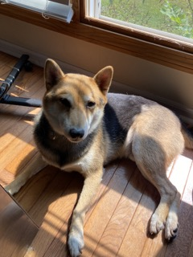
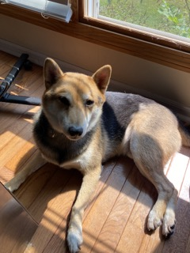

Pets
Bacon Q Dog

Bacon Q. Dog is a 9yr old labradoodle. He prefers to spend his days lounging among the three different beds/couches that his family has gifted him. He enjoys a walk or two around the neighborhood, as long as he can pretend that he doesn't see any of the other animals to avoid the embarrassment of not wanting to admit he has no wolf-like skills in chasing them.
At night just as the rest of the family is ready to relax, Bacon suddenly wants to release all of his energy. He will place his toys on a mini couch and frantically drag the couch around, giving his toys "a ride." There is also a lot of rolling. Lots and lots of rolling.
Photo Gallery


Likes
- Belly rubs
- Playing tug-of-war
- Sneaking onto the couch
Jiji

Jiji is a one year old gray tabby cat born in Miami, FL. She was adopted when she was a few weeks old. Her birthday is July 2nd 2022. Her favorite toy is her fish wand and her second favorite toy is a slinky.
In her free time she likes to sit on the windowsill and people watch. She also likes to collect any stray ponytails she can find in bathrooms, on the floor, and on bedside tables. She has a very high pitched meow and loves to be brushed.
Photo Gallery


Likes
- Slinkies
- Eating plants
- Hair ties
Bear

Bear is a lazy, food-loving dog that is sometimes playful. His favorite activity is lying in the sun on his side and lounging. He enjoys playing with his toys and loves to fetch them when you throw them, but eventually, he gets bored and just stops fetching them and lays down.
Bear is also scared of a lot of things. He doesn't like water (showers and even rain) or getting his nails clipped, and he's sometimes even so lazy that he'll just stop walking and sit down until you turn around and go back home.
Photo Gallery


 

Likes
- Food
- Laying in bed
- Fetch
York

York loves to stay active and go on long walks by his house. He also enjoys chewing on his large assortment of toys. His favorite toy is his squeaky pig. York's favorite food is sausage, but cheese is another favorite.
York is a very sociable dog and is a licensed therapy dog. He frequently visits nursing homes and other places in an attempt to raise peoples' spirits. When it comes to bedtime, York prefers to sleep alone in his favorite blue dog bed. He will always be the first to get up in the morning.
Photo Gallery


Likes
- Food
- Playing
- Toys
Zack

Zack is an African grey parrot, aged around three years old. Zack loves flying and being outside of the cage at all times. He's very nice but bites so much.
Zack's favorite foods are unsalted sunflower seeds and mangos. He loves being able to sit on people's shoulder and talking to them. Zack knows over 500 words and learns more everyday.
Photo Gallery


Likes
- Sunflower seeds
- Flying
- Going on walks